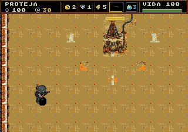
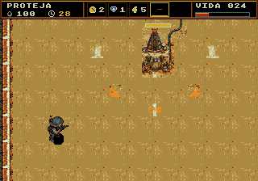
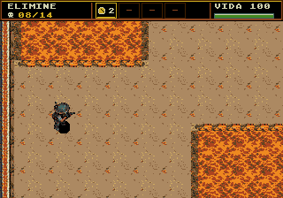

Capturas reais da ROM em 320×224. Painel de 24 px, quatro espaços, seleção dourada, modo ativo azul e vida numérica com barra. Os cenários de verificação têm preparação explícita em RAM.
ROM testada · Guia e limites · Relatórios





Testes funcionais em PAL e NTSC passaram. Os ensaios pesados das fases 3 e 5 registraram 58,6 e 57,8 FPS em NTSC; PAL passou a 50 FPS. A carga extrema do treino indica 19/18 FPS. Esses limites permanecem no relatório.